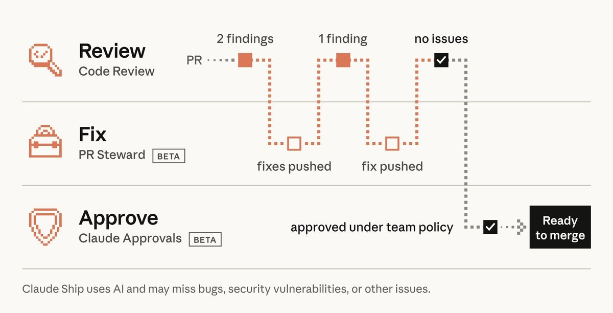
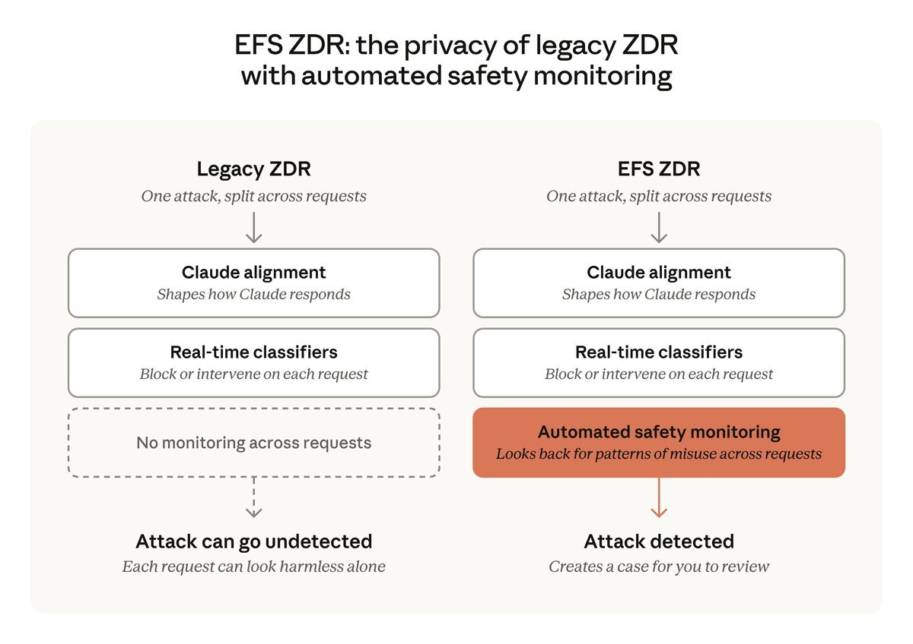

AI
Brief
Monday edition
Claude can now fix and approve routine code changes
Also: AWS opens models that choose instead of write, Z.ai gets more from the same model by running it twice, Anthropic checks for misuse without keeping data, and Sierra raises on pay-per-result pricing.
What matters today

Claude approves code changes
Anthropic launches Claude Ship to review, fix and approve pull requests.
- In beta: PR Steward fixes failing checks and conflicts but never merges; Claude Approvals approves routine changes under a policy file the team keeps in the repo.
- Anthropic's figures: on its own team, merged pull requests more than doubled from June to September while the share reverted fell by over 40%.
- Plans: Team and Enterprise on GitHub, billed on tokens with spend limits.
Why it mattersOnce AI writes most of the code, the bottleneck is the person who approves it. Approval becomes a written policy an agent applies, so review depth is a setting and a line on the bill.
AWS opens decision models
AWS releases five open models that pick answers instead of writing them.
- Strands Decider v2: built on Google's Gemma 4, 2B to 31B parameters, Apache 2.0. Each returns a probability for every option it is given.
- Amazon's figures: swapping Claude Sonnet 4.6 for the first small model cut ticket labeling from about $22,200 to $500 per million tickets.
Why it mattersMany of an agent's steps are small choices, such as which team gets a ticket. Those can run on a free model a team hosts itself, and the frontier model is paid only for the steps that need it.
Z.ai runs its layers twice
Z.ai releases GLM-5.4, a model that runs the same layers twice per answer.
- How it works: a shared block of 28 layers runs twice. Z.ai says its 750B model matches 2 to 3 trillion parameter models; full benchmarks are not out.
- Available: in the GLM Coding Plan, ZCode and Z.ai Chat, with vision and a 1 million token context. At 30B, the looped design beat a standard one on math.
Why it mattersZ.ai gets more reasoning out of the same size of model by reusing it. If that holds at full scale, strong coding models need less hardware to serve, which keeps pushing their price down.

Misuse checks without logs
Anthropic opens a beta that watches for misuse without keeping customer data.
- Public beta: inputs and outputs go to the customer's own Amazon S3 or Google Cloud storage under its own keys. Anthropic's monitor reads them there and keeps no copy.
- Why: attacks split across many harmless-looking requests slip past checks of one request at a time. Amazon Bedrock added a way to enroll on November 24.
Why it mattersRegulated companies had to choose between keeping no logs and getting the provider's misuse checks. Having both removes one more reason to keep frontier models out of banks and hospitals.
Sierra raises at $30B
Sierra raises $1.75 billion for its customer service agents.
- Series F: at a $30 billion valuation, led by Greenoaks and Lightspeed. Sierra says it passed $400 million in annual recurring revenue in just over two and a half years.
- Pricing: Sierra charges for outcomes, such as a problem resolved or a loan originated, not for usage or tokens.
Why it mattersThe largest customer service agent company bills per result, not per token. Buyers will start asking every agent vendor for that, so teams have to measure outcomes well enough to price on them.
Also in the news
- GPT-6.2 Sol in ChatGPT: a version tuned for conversation reaches the Chat tab on paid plans; it meets OpenAI's policies in hard chats 91% to 94% of the time, up from 77% to 80%.
- Shirudo: OpenAI and Cisco open-source a runtime that blocks an exploit on a running Linux system without a restart while a patch is readied; an operator approves each block.
- OpenWorks: OpenAI's pilot pays local experts up to $8,000 a month to help small businesses in 20 US communities put AI to work; businesses get three months of ChatGPT Business free.
- AI Mode in Search: users can opt in to connect Google Wallet, read only, starting now; Drive and the Gemini app follow in the coming weeks.
- Google Chat: agents and apps can now send tables and headings, in standard Markdown through the Chat API, for all Workspace customers.
- Gemini API file slicing: send PDFs, Office files, audio or video and ask for only certain pages, cells or segments, paying tokens only for those parts.
- GitHub issue statuses: in public preview, from Backlog to Done; assigning an agent moves an issue to In progress, and repository boards show them.
- Amazon and Decart: now signed; Amazon buys the technology behind Decart's optimization stack and hires its founders and team to speed up its Trainium chips. No terms given.
- AWS WAF: generally available, finds MCP, agent-to-agent and model endpoints across an AWS organization, undocumented ones included, and screens them for prompt injection.
- Canva MCP: a rebuilt server open to any agent or developer, plus new APIs and service accounts so Canva's design tools run inside other products.
- Meta Muse: Meta's personal agent launches for adults in the UK; it asks for approval before sending an email or making a purchase.
- Agentforce Coworker: Salesforce's agent is now available in its Starter and Pro Suite plans for small businesses.
- Workday: completes its purchase of C1.ai, to manage which systems both employees and AI agents can reach.
- Microsoft AI: its new base model, MAI Base 2, is being post-trained with its own Rocket framework, without distillation from third-party models.
- Google semantic governance policies: check each tool call an agent proposes against what the user asked; unguarded, a hidden instruction redirected a payment in 6 of 6 runs.
- Mistral AI: November 19; Deutsche Telekom invests €100 million in Mistral's Series D as a first step to a partnership for German companies and public bodies.